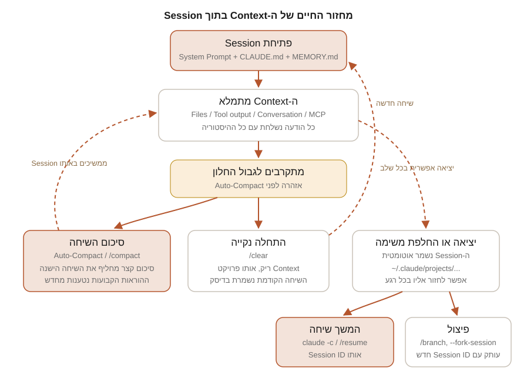

חלק ג | פרק 14
Context Window ו-Session Management
ה-Context Window הוא המשאב היקר ביותר בעבודה עם Claude Code: הוא קובע כמה Claude "זוכר", כמה מהר הוא מגיב וכמה כל הודעה עולה. בפרק הזה נבין מה בדיוק נכנס לחלון, איך הוא מתמלא בלי שנשים לב, מה קורה ב-Compaction אוטומטי וידני, מתי עדיף /clear, איך Prompt Caching הופך היגיינת Context לחיסכון כספי ישיר, ואיך מנהלים כמה Sessions במקביל: המשך, מתן שמות, פיצול, וכתיבת Handoff Summary מסודר בין משימות.
מה זה Context Window
מודל שפה לא "זוכר" שום דבר בין בקשות. בכל פעם שאתם שולחים הודעה, Claude Code שולח ל-API את כל מה שהמודל צריך לדעת: הוראות המערכת, הוראות הפרויקט, כל השיחה עד עכשיו, וכל תוצאה של כל כלי שהופעל. הכמות הכוללת הזאת, שנמדדת ב-Tokens, חייבת להיכנס לתוך ה-Context Window: חלון הקלט המקסימלי של המודל.
גודל החלון תלוי במודל. ברוב המודלים החלון הסטנדרטי הוא 200 אלף Tokens (בערך 150 אלף מילים באנגלית, פחות בעברית). לפי התיעוד הרשמי, המודלים Fable 5, Sonnet 5, Opus 4.6 ואילך ו-Sonnet 4.6 תומכים גם בחלון של מיליון Tokens; Sonnet 5 רץ על מיליון כברירת מחדל, ובשאר בוחרים וריאנט [1m] בהתאם לזמינות בתוכנית שלכם. חלון גדול יותר לא מבטל את הצורך בניהול: הוא רק דוחה את הרגע שבו תצטרכו אותו, וכפי שנראה בהמשך, Context גדול עולה יותר בכל הודעה.
שתי מסקנות מעשיות נובעות מהמכניקה הזאת:
- ה-Context הוא מצטבר. כל קובץ ש-Claude קרא, כל פלט של בדיקה שרצה, כל תשובה שהוא כתב, כולם נשארים בחלון וממשיכים להישלח שוב ושוב עם כל הודעה חדשה.
- ה-Context הוא תקציב. שאלה של שורה אחת ב-Session שפתוח כבר שעות שולחת את כל ההיסטוריה, לא רק את השורה. לכן ניהול החלון הוא גם ניהול עלויות.
מה נכנס לחלון: אנטומיה של Context
עוד לפני שהקלדתם את המילה הראשונה, החלון כבר אינו ריק. התיעוד הרשמי מפרט מה נטען אוטומטית בפתיחת Session ומה מצטרף תוך כדי עבודה. אלה הקטגוריות, לפי סדר הופעתן:
| רכיב | מתי נטען | מה יש בו |
|---|---|---|
| System Prompt | תמיד, ראשון | הוראות הליבה של Claude Code: התנהגות, שימוש בכלים, פורמט תשובות, ופרטי סביבה (תיקייה, מערכת הפעלה, מצב Git). אתם לא רואים אותו אף פעם |
| Auto Memory | בפתיחה | הערות ש-Claude כתב לעצמו ב-Sessions קודמים. נטענות עד 200 השורות הראשונות או 25KB של MEMORY.md, המוקדם מביניהם (פירוט בפרק 16) |
| קובצי CLAUDE.md | בפתיחה | הוראות ברמת ארגון, משתמש ופרויקט, כולל Rules לא ממוקדים (פירוט מלא בפרק 15) |
| כלי MCP | בפתיחה (שמות בלבד) | כברירת מחדל נטענים רק שמות הכלים; ההגדרות המלאות (Schemas) נטענות לפי דרישה דרך Tool Search |
| תיאורי Skills | בפתיחה | שורת תיאור אחת לכל Skill זמין. התוכן המלא נטען רק כשה-Skill מופעל |
| ההודעות שלכם | תוך כדי שיחה | כל Prompt שהקלדתם, כולל פלט של פקודות ! שמצורף להודעה |
| קריאת קבצים | תוך כדי שיחה | התוכן המלא של כל קובץ ש-Claude קורא. בטרמינל רואים רק שורת "Read", אבל כל התוכן נכנס לחלון |
| פלט כלים ופקודות | תוך כדי שיחה | תוצאות חיפוש, פלט בדיקות, הודעות שגיאה, פלט Build. גם כאן, בטרמינל מוצג תקציר אבל בחלון יושב הפלט המלא |
| Rules ממוקדי נתיב ו-CLAUDE.md מקוננים | לפי דרישה | נטענים אוטומטית ברגע ש-Claude קורא קובץ שמתאים לתבנית או נמצא בתת-התיקייה |
| פלט Hooks | לפי אירוע | רק מה ש-Hook מחזיר בשדה additionalContext נכנס לחלון; פלט רגיל הולך ליומן Debug בלבד |
| תשובות Claude | תוך כדי שיחה | כל ניתוח, הסבר ו-Diff שהוא מציג, וגם סיכומים שחוזרים מ-Subagents |
שימו לב לפער בין מה שאתם רואים למה שהמודל רואה: רוב מה שממלא את החלון (תוכן קבצים, פלט פקודות, הוראות שנטענו) מוצג בטרמינל כשורה אחת או לא מוצג בכלל. זו הסיבה שהחלון מתמלא "בהפתעה". הפקודה /context, שנראה מיד, סוגרת את הפער הזה.

איך החלון מתמלא בפועל
לפי התיעוד, קריאת קבצים היא הצרכן הדומיננטי של Context ברוב ה-Sessions. אבל היא לא לבד. אלה המקורות שממלאים חלון מהר יותר מכל דבר אחר:
- קבצים גדולים. קובץ של 2,000 שורות יכול לשקול 15 עד 25 אלף Tokens. בקשה כללית מדי ("תבין את הפרויקט") גוררת קריאה של עשרות קבצים.
- לוגים ופלט פקודות. הרצת חבילת בדיקות מלאה, פלט Build מפורט או קובץ לוג של אלפי שורות נכנסים לחלון במלואם, גם כשרק שלוש שורות מתוכם רלוונטיות.
- הדבקות ארוכות. כשאתם מדביקים Stack Trace שלם, JSON ענק או פלט טרמינל גולמי לתוך ה-Prompt, הכול נשאר בהיסטוריה לתמיד.
- כלי MCP. כברירת מחדל רק שמות הכלים נטענים מראש, אבל שרתים שמוגדרים
alwaysLoad, או סביבות שבהן Tool Search כבוי, טוענים את כל ההגדרות מראש. הפקודה/mcpמציגה את העלות פר שרת. - שיחה ארוכה בלי מטרה. עשר משימות שונות באותו Session משאירות בחלון שאריות של תשע משימות שכבר הסתיימו.
בדיקת מצב עם /context
הפקודה /context רצה בתוך ה-Session ומציגה תמונת מצב חיה של החלון: רשת צבעונית שממחישה כמה מקום תופסת כל קטגוריה (הוראות מערכת, כלים, קובצי Memory, הודעות), אילו קובצי CLAUDE.md ו-Auto Memory נטענו בפועל, והצעות ייעול: כלים כבדים, קובצי הוראות מנופחים ואזהרות קיבולת. במסך מלא אפשר להקליד /context all כדי להרחיב את הפירוט המלא.
מתי להריץ? שלושה רגעים קלאסיים: בתחילת Session חדש (כדי לוודא שקובצי ההוראות הנכונים נטענו), כשהתגובות נהיות איטיות או שטוחות (כדי לראות מי אשם), ולפני החלטה בין /compact ל-/clear. אם השיחה חרגה מהחלון, הפלט כולל אזהרה שמציינת בכמה חרגתם ואיזו פקודה תפנה מקום (החל מגרסה 2.1.216).
אימות: הריצו /context בפרויקט TaskFlow מיד אחרי פתיחת claude. תחת רשימת קובצי ה-Memory אמור להופיע CLAUDE.md של הפרויקט. אם הוא חסר, בדקו שהפעלתם את Claude Code משורש הפרויקט.
Compaction: אוטומטי וידני
מה קורה אוטומטית
כשמתקרבים לגבול החלון, Claude Code מנהל את המקום בעצמו, בשני שלבים מתועדים: קודם הוא מפנה פלטי כלים ישנים, ואם זה לא מספיק, הוא מסכם את השיחה כולה. הסיכום שומר את הבקשות שלכם ואת קטעי הקוד המרכזיים; הוראות מפורטות מתחילת השיחה עלולות ללכת לאיבוד. המסקנה המתועדת: כלל שחייב לשרוד לאורך זמן שייך ל-CLAUDE.md, לא לשיחה.
יש גם מנגנון הגנה: אם קובץ בודד או פלט ענק ממלאים את החלון מחדש מיד אחרי כל סיכום, Claude Code מפסיק לנסות אחרי כמה ניסיונות ומציג שגיאת Thrashing במקום להיכנס ללולאה אינסופית.
מה שורד את ה-Compaction
לא הכול נמחק. התיעוד מפרט בדיוק מה קורה לכל מנגנון, וזה שווה שינון כי הוא מסביר התנהגויות "מוזרות" רבות:
| מנגנון | אחרי Compaction |
|---|---|
| System Prompt ו-Output Style | ללא שינוי; הם לא חלק מהיסטוריית ההודעות |
| CLAUDE.md של שורש הפרויקט ו-Rules לא ממוקדים | נטענים מחדש מהדיסק |
| Auto Memory | נטען מחדש מהדיסק |
Rules עם paths: | הולכים לאיבוד עד שקובץ מתאים ייקרא שוב |
| CLAUDE.md מקונן בתת-תיקייה | הולך לאיבוד עד שקובץ בתיקייה ייקרא שוב |
| תוכן Skills שהופעלו | נטען מחדש, עד 5,000 Tokens לכל Skill ועד 25,000 בסך הכול; הישנים ביותר נזרקים ראשונים |
| רשימת תיאורי ה-Skills | לא נטענת מחדש; רק Skills שהופעלו בפועל נשמרים |
| Hooks | לא רלוונטי; הם רצים כקוד, לא כ-Context |
/compact ידני עם הוראות מיקוד
הפקודה /compact מפעילה את אותו סיכום, אבל בתזמון וברמת שליטה שלכם. אפשר, ומומלץ, לצרף הוראות מיקוד:
/compact focus on the whitespace-title bug fix and the failing tests
/compact keep the API design decisions and drop the explorationההוראה קובעת מה הסיכום ישמור, במקום שהמעבר האוטומטי ינחש מה חשוב. ב-Session טרי הפקודה תחזיר Not enough messages to compact., כי אין עדיין מה לסכם. טיפ מתועד נוסף: אפשר לקבוע התנהגות קבועה על ידי סעיף Compact instructions בתוך CLAUDE.md של הפרויקט, למשל הנחיה לשמור תמיד פלט בדיקות ושינויי קוד.
הריצו /compact בהפסקה טבעית בין משימות, לא באמצע משימה. כך אתם בוחרים מתי לשלם את מחיר הסיכום, והסיכום עצמו נעשה כשקל להגדיר מה חשוב לשמור. אם ירדתם למסלול שאתם רוצים לנטוש לגמרי, /rewind לנקודה מוקדמת זול יותר מ-Compaction, כי הוא חוזר ל-Context שכבר שמור ב-Cache.
/compact מול /clear: ניתוח עלות ותועלת
שתי הפקודות מפנות מקום, אבל הן כלים שונים לחלוטין:
/compact | /clear | |
|---|---|---|
| מה נשאר | סיכום מובנה של השיחה + כל תוכן הפתיחה שנטען מחדש | רק תוכן הפתיחה (System Prompt, CLAUDE.md, Memory); היסטוריה ריקה |
| רציפות | אותה שיחה נמשכת; Claude "זוכר" את עיקרי העבודה | שיחה חדשה; Claude לא זוכר דבר מהקודמת |
| עלות | בקשת סיכום שקוראת את כל השיחה: ככל שהחלון גדול, היא יקרה יותר (רובה מוגש מה-Cache) | ללא עלות; שום דבר לא נשלח למודל |
| מה קורה לשיחה הישנה | מוחלפת בסיכום בתוך אותו Session | נשמרת בדיסק; חוזרים אליה עם /resume או מתפריט ה-Rewind (בגרסה 2.1.191 ואילך) |
| מתי להשתמש | ממשיכים את אותה משימה ארוכה וצריך את ההקשר | עוברים למשימה לא קשורה; ההיסטוריה רק תפריע ותעלה כסף |
ל-/clear יש תוספת שימושית: /clear [name] נותן שם לשיחה שסיימתם, כך שקל למצוא אותה אחר כך בבורר של /resume. הכינויים /reset ו-/new עושים אותו דבר. כלל אצבע מהתיעוד הרשמי: כשרוצים התחלה נקייה ולא רציפות, /clear עדיף, כי הוא לא עולה כלום.
אחרי הפקודה תיפתח שיחה חדשה עם Context ריק, והשיחה הקודמת תופיע בבורר של /resume תחת השם whitespace-bug-fix. שם שנתתם בעצמכם עם --name או /rename נשמר גם בשיחה החדשה; כותרת שנוצרה אוטומטית, לא.
Prompt Caching: למה היגיינת Context שווה כסף
Prompt Caching הוא המנגנון שהופך את המבנה המצטבר של השיחה לנסבל כלכלית. ה-API משווה את תחילת כל בקשה (ה-Prefix) לתוכן שהוא כבר עיבד לאחרונה; מה שזהה מוגש מה-Cache במקום להיות מעובד מחדש. לפי התיעוד, קריאה מה-Cache מחויבת בסביבות 10% ממחיר הקלט הרגיל, וכתיבה ל-Cache מחויבת בתעריף גבוה יותר מקלט רגיל. Claude Code מסדר את הבקשה בשלוש שכבות, מהיציב לתנודתי: System Prompt, הקשר הפרויקט (CLAUDE.md, Memory), והשיחה עצמה. שינוי בשכבה מוקדמת מבטל את ה-Cache של כל מה שאחריה.
מכאן נובעות שלוש עובדות שכל מפתח צריך להכיר:
- ל-Cache יש שעון. על מנוי Claude (Pro/Max/Team/Enterprise) ה-Cache חי שעה בין הודעות; על מפתח API או ספק ענן, חמש דקות כברירת מחדל (אפשר להאריך עם
ENABLE_PROMPT_CACHING_1H=1). ההודעה הראשונה אחרי הפסקה ארוכה מעבדת את כל החלון מחדש, ולכן דווקא היא היקרה והאיטית ביותר. וככל שהחלון גדול יותר, ההחמצה הזאת יקרה יותר. זה טיעון כלכלי ישיר בעד חלון רזה. - פעולות מסוימות שוברות את ה-Cache. החלפת מודל עם
/model, שינוי רמת Effort, הדלקת Fast Mode, התחברות או התנתקות של שרת MCP שכליו טעונים מראש, חסימת כלי שלם ב-Permissions, שדרוג גרסה, וכמובן ה-Compaction עצמו. אחרי כל אחת מאלה, התור הבא קורא את כל ההיסטוריה בלי Cache. - פעולות אחרות בטוחות. עריכת קבצים בפרויקט, החלפת Permission Mode, הפעלת Skills, פקודת
/rewindוהרצת Subagents לא נוגעות ב-Prefix. שימו לב לפרט מתועד ומפתיע: עריכת CLAUDE.md באמצע Session לא שוברת את ה-Cache, אבל היא גם לא נכנסת לתוקף; הגרסה החדשה נטענת רק ב-/clear, ב-/compactאו בהפעלה מחדש.
בחרו מודל ורמת Effort בתחילת ה-Session ואל תחליפו באמצע משימה. כל החלפה כזאת היא תור אחד יקר ואיטי של בנייה מחדש של ה-Cache. את יחס ה-Cache אפשר לראות ב-/usage: יחס גבוה של קריאות Cache מול כתיבות אומר שהכול עובד כמו שצריך.
ניהול Sessions: המשך, שמות ובורר
Session הוא שיחה שמורה שקשורה לתיקיית פרויקט. Claude Code שומר אותה לדיסק באופן רציף (קובצי JSONL תחת ~/.claude/projects/, עם מחיקה אוטומטית אחרי 30 יום כברירת מחדל, שניתנת לשינוי בהגדרה cleanupPeriodDays). לכן יציאה מהטרמינל, ואפילו /clear, לא מאבדים כלום. אלה נקודות הכניסה המתועדות:
| פקודה | מה היא עושה |
|---|---|
claude --continue (או claude -c) | ממשיך את ה-Session האחרון בתיקייה הנוכחית |
claude --resume (או claude -r) | פותח בורר Sessions אינטראקטיבי |
claude --resume <name> | ממשיך Session לפי שם או מזהה, ישירות |
claude --from-pr <number> | בורר מסונן ל-Sessions שקשורים ל-Pull Request מסוים |
/resume [name] | מעבר לשיחה אחרת מתוך Session פעיל |
מה משוחזר? ההיסטוריה המלאה כולל קריאות כלים, המודל שבו השתמשתם (בכפוף לזמינות), ה-Agent אם הופעל, ו-Permission Mode, למעט plan ו-bypassPermissions שלעולם אינם משוחזרים אוטומטית, משיקולי בטיחות. דגלים כמו --mcp-config או --add-dir צריך להעביר שוב בהרצה.
שמות ל-Sessions
כשעובדים על כמה משימות במקביל, שמות הם ההבדל בין סדר לכאוס. ארבע דרכים מתועדות:
- בהפעלה:
claude -n auth-refactor - תוך כדי עבודה:
/rename auth-refactor(השם מוצג גם בשורת ה-Prompt) - בבורר: מקש
Ctrl+Rעל Session מסומן - בסגירת שיחה:
/clear auth-refactorנותן שם לשיחה שזה עתה סיימתם
Session שלא קיבל שם מקבל כותרת אוטומטית שנוצרת ממודל מהיר על בסיס ה-Prompt הראשון. הכותרת הזאת מוצגת בבורר אבל אינה "ידית" להמשך: claude --resume <name> עובד רק עם שמות שנתתם בעצמכם.
קיצורים בבורר ה-Sessions
בתוך הבורר (של /resume או claude --resume): חצים לניווט, Space לתצוגה מקדימה, Ctrl+R לשינוי שם, הקלדה חופשית לחיפוש (אפשר גם להדביק כתובת של Pull Request כדי למצוא את ה-Session שיצר אותו), Ctrl+W להרחבה לכל ה-Worktrees, Ctrl+A לכל הפרויקטים במחשב, ו-Ctrl+B לסינון לפי ה-Branch הנוכחי.
פיצול Session: branch, fork-session ו-fork
שלושה מנגנונים דומים בשם ושונים בהתנהגות. חשוב להבדיל ביניהם:
| מנגנון | מה הוא עושה | מתי להשתמש |
|---|---|---|
/branch [name] | מעתיק את השיחה עד לנקודה הנוכחית, עובר אתכם לעותק ומשאיר את המקור ללא שינוי. רץ באותו תהליך, ולכן אישורי "Allow for this session" נשמרים | לנסות כיוון אחר בלי לאבד את המסלול הנוכחי |
claude -c --fork-sessionclaude -r <id> --fork-session | ממשיך Session קיים אבל תחת Session ID חדש, בתהליך חדש. המקור נשאר כמו שהיה; אישורי ההרשאות לא עוברים | להמשיך שיחה ישנה בלי "ללכלך" אותה, או לפתוח שני המשכים שונים לאותה נקודה |
/fork [prompt] | מעתיק את השיחה ל-Session רקע חדש שרץ במקביל ב-Agent View, בזמן שאתם ממשיכים לעבוד כאן. עם Prompt, העותק מתחיל לעבוד עליו מיד. דורש גרסה 2.1.212 ואילך | להריץ ניסוי מקביל שלם בלי לעזוב את השיחה הנוכחית |
הבחנה מתועדת חשובה: המשך רגיל (-c, -r) מוסיף הודעות לאותו Session ID; פיצול יוצר Session ID חדש ומשאיר את המקור בדיוק כמו שהיה. ואם פותחים את אותו Session בשני טרמינלים בלי לפצל, ההודעות משני הצדדים משתרגות לאותו Transcript, מה שכמעט אף פעם אינו רצוי. יש גם /subtask, שמפצל את השיחה ל-Subagent שמדווח חזרה אליה; נרחיב עליו בפרק על Subagents.
מתי לפתוח Session חדש ואיך לעשות Handoff
הסימנים שהגיע הזמן ל-/clear או ל-Session חדש: המשימה הנוכחית הסתיימה ואתם עוברים לנושא לא קשור; Claude מתחיל "לשכוח" הנחיות מוקדמות או לערבב בין משימות; /context מראה שהיסטוריית השיחה גדולה פי כמה מכל השאר; או שעברתם כבר שני מחזורי Compaction באותה משימה, והסיכומים איבדו דיוק.
הבעיה בהתחלה נקייה היא אובדן ידע: הדברים שלמדתם בשיחה הנוכחית לא יעברו לבאה. הפתרון הוא Handoff Summary: לפני הסגירה מבקשים מ-Claude לסכם את מצב העבודה לקובץ, ובשיחה הבאה פותחים ממנו. זו טכניקה מעשית שאנחנו ממליצים עליה במדריך (היא אינה פקודה מובנית):
Write a handoff summary to HANDOFF.md with exactly these sections:
1. Goal: what we are trying to achieve overall
2. Done: what was completed, with file paths
3. In progress: current task and its exact state
4. Next steps: ordered list of what remains
5. Decisions: choices we made and why
6. Gotchas: pitfalls, failing tests, things that look wrong but are intentional
Keep it under 60 lines. Do not include code, only paths and facts.Read HANDOFF.md and continue from "Next steps". Confirm your understanding
of the current state in two sentences before touching any file.ואם הידע כללי ולא משימתי (מוסכמה חדשה, פקודת Build שהתגלתה), מקומו ב-CLAUDE.md או ב-Auto Memory, לא בקובץ Handoff. כך הוא יהיה זמין בכל Session עתידי אוטומטית.
מניעת זיהום Context
קל יותר לשמור על חלון נקי מאשר לנקות אותו. חמישה הרגלים:
- נקו הדבקות לפני שליחה. אל תדביקו לוג שלם; הדביקו את 20 השורות סביב השגיאה. אל תדביקו JSON של 500 שורות; הדביקו את השדות הרלוונטיים. כל מה שנכנס להודעה נשאר בהיסטוריה עד ה-Compaction הבא.
- כוונו קריאות במקום סריקות. "תקן את הבאג ב-
models.pyבפונקציית הוולידציה" גורר קריאה של קובץ אחד; "תמצא למה הוולידציה שבורה" גורר סריקה של עשרה. אזכור מפורש עם@הוא הדרך המדויקת ביותר. - בקשו פלט מסונן. במקום להריץ חבילת בדיקות שלמה לתוך החלון, בקשו "run the tests and show only failures". התיעוד מציע גם פתרון קבוע: Hook מסוג PreToolUse שמסנן פלט בדיקות לשורות הכישלון בלבד, עוד לפני ש-Claude רואה אותו (ראו פרק 22 על Hooks).
- העדיפו CLI על MCP כשיש ברירה. כלים כמו
ghו-awsלא מוסיפים שום רישום קבוע לחלון; שרת MCP מוסיף לפחות את שמות כליו. כבו שרתים שאינכם משתמשים בהם דרך/mcp. - עקבו באופן רציף. אפשר להגדיר את שורת הסטטוס (Statusline) להציג את ניצול החלון כל הזמן, במקום להיזכר ב-
/contextכשכבר מאוחר.
בידוד מחקר עם Subagent
הכלי החזק ביותר לשמירה על חלון נקי הוא ה-Subagent: עוזר משנה שמקבל חלון Context נפרד ונקי משלו. כשאתם מבקשים "use a subagent to research how sessions are handled", קריאת עשרות הקבצים קורית בחלון של ה-Subagent, ולחלון שלכם חוזר רק הסיכום הסופי עם מעט מטא-נתונים. בהדגמה שבתיעוד הרשמי, Subagent קרא 6,100 Tokens של קבצים והחזיר תוצאה של 420 בלבד.
מה ה-Subagent מקבל בפתיחה? את קובצי ה-CLAUDE.md ואת הגדרת המשימה שכתב לו Claude, אבל לא את היסטוריית השיחה שלכם ולא את ה-Auto Memory הראשי. השימוש הקלאסי, כלשון התיעוד, הוא בידוד פעולות עתירות פלט: הרצת בדיקות, משיכת תיעוד, עיבוד לוגים. נעמיק בהגדרת Subagents מותאמים אישית בפרק 25: Subagents.
Use a subagent to run the full backend test suite and report only
the failing tests with their error messagesשגיאות נפוצות
- "ערכתי את CLAUDE.md ו-Claude מתעלם." עריכה באמצע Session לא נטענת. הריצו
/clear,/compactאו פתחו Session חדש. - "אחרי /compact נעלמו לי הוראות." אם הן היו בשיחה בלבד או ב-CLAUDE.md מקונן, זו התנהגות מתועדת. העבירו כללים קבועים ל-CLAUDE.md של שורש הפרויקט.
- "ההודעה הראשונה בבוקר איטית ויקרה." ה-Cache פג אחרי הפסקה ארוכה, וה-Context המלא עובר עיבוד מחדש. Session ארוך במיוחד מגדיל את המכה; שקלו לסגור עם Handoff בסוף היום.
- "Auto-compaction stops with a thrashing error." פלט או קובץ ענק ממלאים את החלון מחדש אחרי כל סיכום. הפתרון:
/clear, ואז גישה ממוקדת יותר לאותו קובץ (או Subagent). - "/compact עונה Not enough messages to compact." אין עדיין היסטוריה לסכם; זו אינה שגיאה.
שיקולי אבטחה בניהול Context ו-Sessions
ה-Context Window וקובצי ה-Session הם מקום שבו סודות נוטים להצטבר בלי כוונה: פלט של env, לוגים עם Tokens, קובצי .env שנקראו. שלושה כללים: (1) התמלילים נשמרים מקומית תחת ~/.claude/projects/ ונמחקים אחרי cleanupPeriodDays (ברירת מחדל 30 יום), ולכן מי שחולק מחשב או מגבה תיקיית בית צריך להתייחס אליהם כמידע רגיש; (2) סיכום Compaction ו-/export עלולים לשאת איתם סוד שהופיע קודם בשיחה, אז לפני שיתוף תמליל או Handoff סרקו אותו; (3) חוקי deny על Read(.env*) (פרק 20) מונעים מהסוד להיכנס ל-Context מלכתחילה, וזה עדיף על כל ניקוי בדיעבד. Session ממוקד וקצר הוא גם Session שקל יותר לבקר.
תרגיל
בתיקיית TaskFlow (ראו פרק 3), בצעו את הרצף הבא ותעדו את התוצאות:
- פתחו
claudeוהריצו/context. רשמו כמה תופסים קובצי ה-Memory וכמה חופשי. - בקשו:
read all files in backend/ and frontend/src/ and explain the data flow. הריצו/contextשוב והשוו. - הריצו
/compact focus on the data flow explanationואז/contextשלישי. מה חזר ומה נעלם? - תנו שם עם
/rename context-lab, צאו עם/exit, וחזרו עםclaude --resume context-lab. ודאו שהסיכום עדיין שם. - לבסוף פצלו:
claude --resume context-lab --fork-session, ובדקו בבורר של/resumeששני Sessions מופיעים.
פתרון מוסבר
שלב 1: בחלון טרי רוב הצריכה היא System Prompt, כלים ו-CLAUDE.md; היסטוריית ההודעות כמעט ריקה. זו "עלות הבסיס" של כל Session.
שלב 2: קריאת כל קובצי הפרויקט מקפיצה את קטגוריית ההודעות בעשרות אלפי Tokens. שימו לב שבטרמינל ראיתם רק שורות "Read" קצרות; ההבדל בין התצוגה למציאות הוא כל הפואנטה.
שלב 3: אחרי ה-Compact, היסטוריית ההודעות מתכווצת לסיכום קטן, אבל CLAUDE.md ו-Auto Memory מופיעים שוב במלואם, כי הם נטענים מחדש מהדיסק. הסיכום ישמר את הסבר זרימת הנתונים, כי זה מה שביקשתם במיקוד.
שלב 4: ההמשך בשם עובד כי /rename יצר "ידית" אמיתית. ההיסטוריה כוללת את הסיכום, לא את הקריאות המקוריות.
שלב 5: הדגל --fork-session יצר Session ID חדש; בבורר תראו את המקור ואת העותק כשתי שורות (ייתכן שמקובצות יחד; מקש חץ פותח את הקבוצה). המקור נשאר בדיוק בנקודה שבה עזבתם אותו.
סיכום
- ה-Context Window מכיל הרבה יותר ממה שרואים בטרמינל: הוראות, קבצים, פלטים ותשובות, וכולו נשלח מחדש בכל הודעה.
- Compaction אוטומטי מפנה קודם פלטי כלים ישנים ואז מסכם; CLAUDE.md של השורש, Auto Memory ו-Skills שהופעלו שורדים, הוראות שיחה ותוכן ממוקד נתיב לא.
/compactעם הוראות מיקוד שולט במה שנשמר;/clearחינמי ועדיף במעבר בין משימות לא קשורות, והשיחה הישנה תמיד נגישה ב-/resume.- Prompt Caching מוזיל קריאות חוזרות לכ-10% מהמחיר, אבל החלפת מודל, Effort או כלים שוברת אותו; היגיינת Context היא חיסכון ישיר.
- המשך עם
claude -cאוclaude -r; פיצול עם/branch,--fork-sessionאו/fork; שמות עם-n,/renameו-/clear [name]. - Handoff Summary מסודר מעביר ידע בין Sessions; ידע קבוע שייך ל-CLAUDE.md, שנלמד לעומק בפרק הבא.
Explore the Context Window |
How Claude Code Works |
Manage Sessions |
Slash Commands |
CLI Reference |
Manage Costs Effectively |
How Claude Code Uses Prompt Caching |
Subagents
נבדק: 28.07.2026